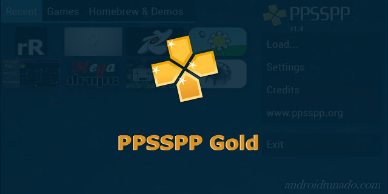

APPS

RETROARCH
RetroArch is an open source and cross platform frontend/framework for emulators, game engines, video games, media players and other.
Download App

PPSSPP
PPSSPP is the best, original PSP emulator for XBOX/PC. It runs a lot of games, but depending on the power of your device all may not run at full speed.
Download App